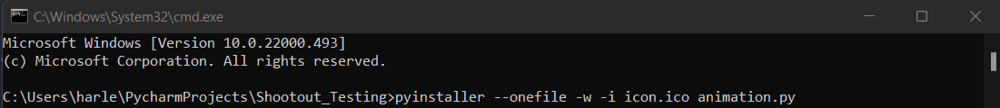
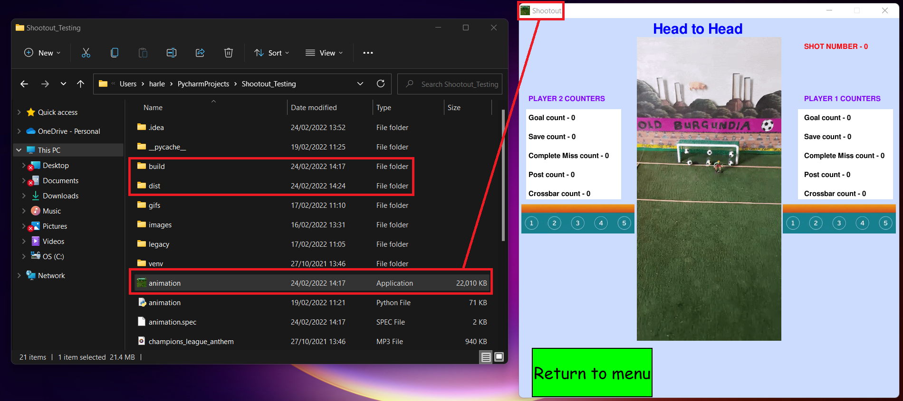
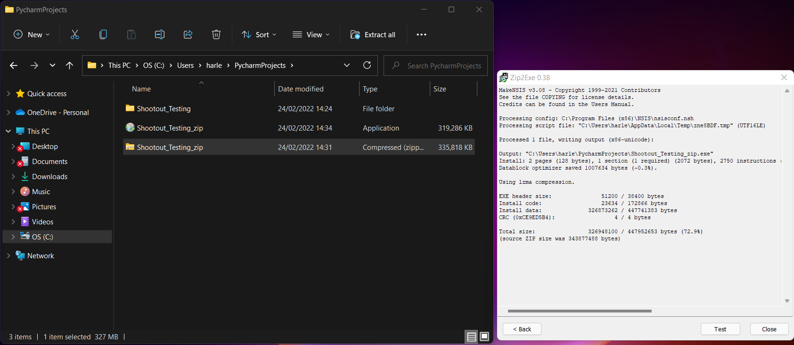

How the game is compiled and runs on desktop
Using Pyinstaller to bundle the animation file into an executable

Pyinstaller is used to bundle a Python application and all of it's
dependencies into a single package.
-
--onefile flag: Ensures that the program is compiled
into one file
-
--w flag: ensures any python printed to console is not
visible when executes the file
-
--i flag: Makes the icon of the execution file a
specfic image
Running the executable file from File Explorer

Once Pyinstaller compiles the game into an executable, a build and
dist folder is created.
The user can run the game without Python being installed on their
operating system
-
animation: When double-clicked, this file will load up
the game, as displayed in the image above
-
The animation file must be in the same directory as all the
dependancies, otherwise it will not be able to load in the assets
Compressing the whole project into a single application for download
or transfer

NSIS can be used to to compress a zip file of the the whole project
folder into a single application.
This single application can then be either directly downloaded or sent
to users to install on their operating system and play the game.